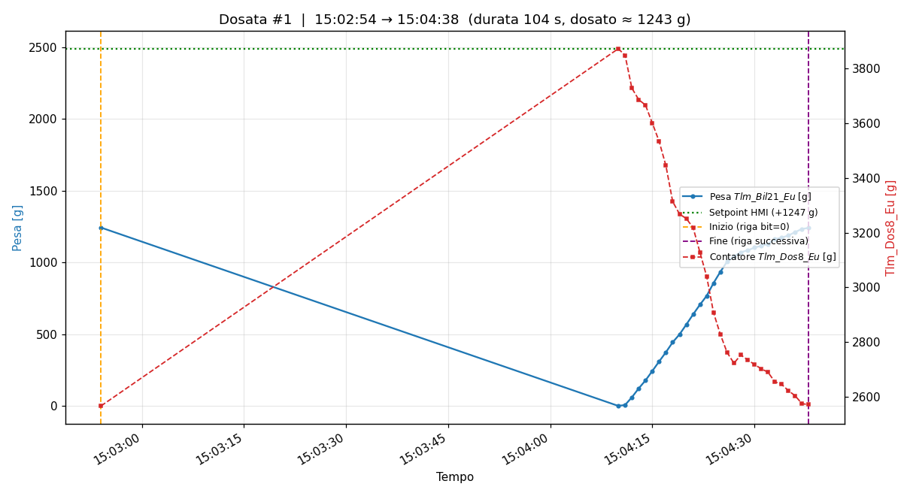
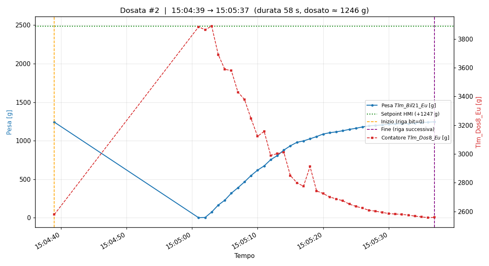
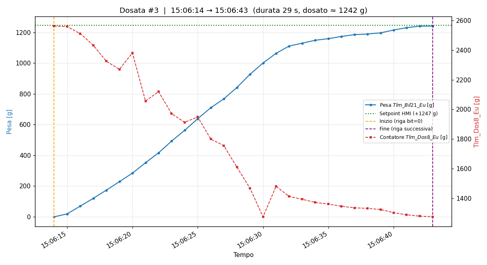
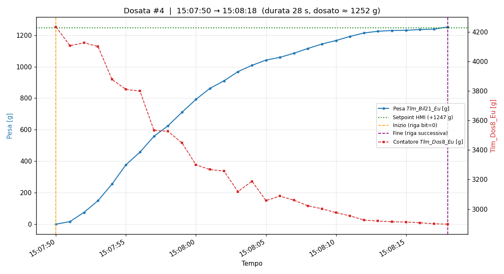
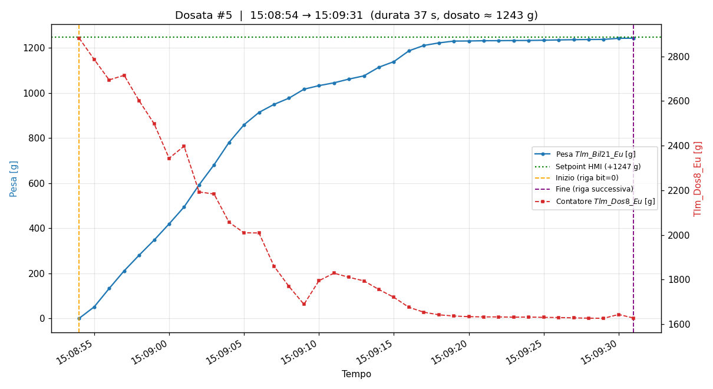
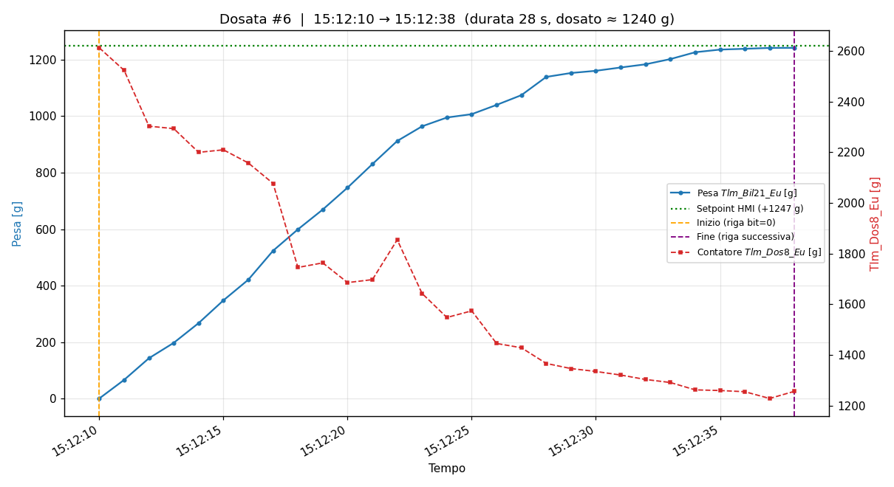

Dosate0.csvSegmentazione: bit DosaggioInCorso: la pesata inizia con la riga a 0 e termina con la riga successiva (estesa alla riga precedente il bit=0 seguente quando la fase attiva cade tra due eventi registrati)
Intervallo dati: 25/09/2026 15:02:16 → 25/09/2026 15:12:39
Numero dosate rilevate: 6
| # | Inizio (riga bit=0) | Fine (riga succ.) | Durata [s] | Pesa inizio [g] | Pesa max [g] | Dosato [g] | Δ Tlm_Dos8 [g] | Velocità media [g/s] | Punti |
|---|---|---|---|---|---|---|---|---|---|
| 1 | 15:02:54 | 15:04:38 | 104 | 1243.0 | 1243.0 | 1242.9 | -4.8 | 12.0 | 30 |
| 2 | 15:04:39 | 15:05:37 | 58 | 1240.8 | 1245.4 | 1245.5 | 19.3 | 21.5 | 38 |
| 3 | 15:06:14 | 15:06:43 | 29 | -0.1 | 1241.4 | 1241.5 | 1288.4 | 42.8 | 30 |
| 4 | 15:07:50 | 15:08:18 | 28 | 0.1 | 1252.2 | 1252.1 | 1335.2 | 44.7 | 29 |
| 5 | 15:08:54 | 15:09:31 | 37 | 0.3 | 1243.1 | 1242.8 | 1254.0 | 33.6 | 38 |
| 6 | 15:12:10 | 15:12:38 | 28 | 1.1 | 1241.2 | 1240.1 | 1355.2 | 44.3 | 29 |
Inizio (riga con DosaggioInCorso=0): 25/09/2026 15:02:54 — Fine (riga successiva): 25/09/2026 15:04:38 — Durata: 104 s
Pesa a inizio dosata: 1243.0 g — Pesa massima: 1243.0 g — Dosato: 1242.9 g
Variazione contatore Tlm_Dos8_Eu: -4.8 g — Velocità media di dosaggio: 12.0 g/s

Inizio (riga con DosaggioInCorso=0): 25/09/2026 15:04:39 — Fine (riga successiva): 25/09/2026 15:05:37 — Durata: 58 s
Pesa a inizio dosata: 1240.8 g — Pesa massima: 1245.4 g — Dosato: 1245.5 g
Variazione contatore Tlm_Dos8_Eu: 19.3 g — Velocità media di dosaggio: 21.5 g/s

Inizio (riga con DosaggioInCorso=0): 25/09/2026 15:06:14 — Fine (riga successiva): 25/09/2026 15:06:43 — Durata: 29 s
Pesa a inizio dosata: -0.1 g — Pesa massima: 1241.4 g — Dosato: 1241.5 g
Variazione contatore Tlm_Dos8_Eu: 1288.4 g — Velocità media di dosaggio: 42.8 g/s

Inizio (riga con DosaggioInCorso=0): 25/09/2026 15:07:50 — Fine (riga successiva): 25/09/2026 15:08:18 — Durata: 28 s
Pesa a inizio dosata: 0.1 g — Pesa massima: 1252.2 g — Dosato: 1252.1 g
Variazione contatore Tlm_Dos8_Eu: 1335.2 g — Velocità media di dosaggio: 44.7 g/s

Inizio (riga con DosaggioInCorso=0): 25/09/2026 15:08:54 — Fine (riga successiva): 25/09/2026 15:09:31 — Durata: 37 s
Pesa a inizio dosata: 0.3 g — Pesa massima: 1243.1 g — Dosato: 1242.8 g
Variazione contatore Tlm_Dos8_Eu: 1254.0 g — Velocità media di dosaggio: 33.6 g/s

Inizio (riga con DosaggioInCorso=0): 25/09/2026 15:12:10 — Fine (riga successiva): 25/09/2026 15:12:38 — Durata: 28 s
Pesa a inizio dosata: 1.1 g — Pesa massima: 1241.2 g — Dosato: 1240.1 g
Variazione contatore Tlm_Dos8_Eu: 1355.2 g — Velocità media di dosaggio: 44.3 g/s
